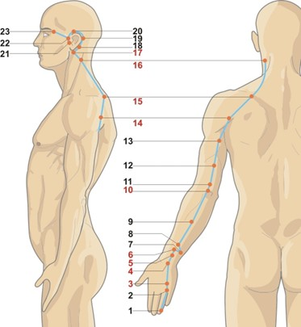

Fereatra de tranziție spre noapte — reglarea profundă
Triplu Încălzitor atinge potențialul maxim între 21:00 – 23:00, momentul în care energia se redistribuie către cele trei arzătoare, pregătind organismul pentru somn și regenerare. Tulburările de somn la această oră, senzația de frig sau de căldură internă, transpirațiile nocturne indică un dezechilibru al acestui meridian.
Energie, ore & elemente asociate
☯Tip energetic
- Yang minor — Shou Shaoyang (手少阳): Micul Yang al mâinii. Este meridianul „coordonatorului” și al „ministrului de externe” al Focului, fără un organ fizic corespunzător, ci mai degrabă un ansamblu funcțional de membrane și cavități.
- Meridian pereche: Pericardul (Shou Jueyin 手厥阴). Împreună formează cuplul Focului Ministerial, coordonând circulația Qi-ului, a fluidelor și homeostazia termică.
- Spirit: Armonia dintre cele trei arzătoare — capacitatea de a distribui energia armonios și de a adapta organismul la schimbările interne și externe.
- Funcții: Reglează căile apei, controlează deschiderea și închiderea porilor (transpirația), influențează sistemul limfatic și endocrin.
🔥Element Foc (火) — Focul Ministerial
- Direcție: | Anotimp: Vara târzie (tranziție)
- Climat: Căldura | Culoare: Portocaliu/Peach
- Gust: Amar | Sunet: Râsul
- Emoție: Bucuria în echilibru; agitația, ipersensibilitatea, stresul în dezechilibru
- Țesuturi: Membranele seroase, țesutul limfatic, grăsimea perivasculară
- Cele trei arzătoare: Superior (respirație, căldură), Mijlociu (digestie, transformare), Inferior (excreție, reproducere, apă).
🕐Ceasul organic — 24 h
- Înainte — Pericardul (PC): 19:00–21:00. Intimitate, relaxare, pregătire pentru noapte.
- Triplu Încălzitor (SJ): 21:00–23:00. Distribuția energiei către cele trei arzătoare, reglarea temperaturii interne, pregătirea pentru somn profund. Ideal pentru activități calmante, meditație, pregătirea pentru culcare.
- După — Vezica Biliară (GB): 23:00–01:00. Intră în faza profundă de regenerare.
- Semnificație clinică: Insomnia de adormire (dificultatea de a adormi între 21-23) = dezechilibru al Triplu Încălzitor. Transpirațiile nocturne, senzația de căldură sau frig alternante = dereglarea homeostaziei termice.
GB
LV
LU
LI
胃
脾
HT
SI
BL
KD
心包
SJ
Traseu & anatomie energetică

Pe partea ulnară a degetului inelar, 0.1 cun proximal de unghie. Punctul de pornire al meridianului.
SJ-2 posterior articulației metacarpofalangiene IV-V. SJ-3 între oasele metacarpiene IV și V.
SJ-4 în pliul încheieturii (Yuan-Sursă). SJ-5 la 2 cun (Luo, cheia Yang Wei Mai). SJ-6 la 3 cun (Jing-Râu).
SJ-7 la 3 cun (Xi-Fisură). SJ-10 în depresiunea de deasupra vârfului cotului (He-Mare).
Coboară pe partea laterală a brațului, apoi pe umăr, până la trapezul superior.
Urmează posterior de ureche, înconjoară urechea, ajunge în fața urechii și se termină la capătul lateral al sprâncenei.
🔗Conexiuni interne profunde
- Fără organ asociat — ansamblu funcțional: Triplu Încălzitorul este format din membranele seroase care învelesc organele și cavitățile toracică, abdominală și pelvină. Aceste membrane asigură circulația Qi-ului și fluidelor între cele trei arzătoare.
- Arzătorul Superior (torace): Guvernează respirația și circulația Qi-ului defensiv (Wei Qi). Conectat cu plămânii și pericardul.
- Arzătorul Mijlociu (abdomen superior): Asociat cu digestia, transformarea alimentelor și absorbția nutrienților. Conectat cu stomacul, splina și pancreasul.
- Arzătorul Inferior (abdomen inferior și pelvis): Guvernează eliminarea (urină, fecale) și funcțiile reproductive. Conectat cu rinichii, vezica urinară, intestinul gros și subțire.
- Conexiunea cu Yang Wei Mai: SJ-5 (Waiguan) este punctul cheie al vasului Yang Wei, care reglează circulația Qi-ului Yang la nivelul exterior al corpului, apărând de atacurile externe (vânt, frig).
Rol: „Coordonatorul energetic” — funcții fiziologice
🌡️Reglarea temperaturii și homeostazia termică
Triplu Încălzitorul menține echilibrul termic al corpului, distribuind căldura de la arzătorul superior (mai cald) la arzătorul inferior (mai rece). Dereglarea produce senzații de frig sau căldură, transpirații anormale, intoleranță la variațiile de temperatură.
💧Reglarea căilor apei și a fluidelor
Coordonază circulația lichidelor corporale între cele trei arzătoare. Funcționează ca un „pompă” care urcă fluidele către plămâni (prin evaporare) și le coboară către rinichi și vezică (prin filtrare). Edemele, transpirațiile excesive sau lipsa transpirației sunt semne de dezechilibru.
🛡️Distribuția Qi-ului defensiv (Wei Qi)
Triplu Încălzitorul trimite Wei Qi la suprafața corpului pentru a proteja împotriva patogenilor externi și pentru a regla deschiderea și închiderea porilor. Imunitatea scăzută și sensibilitatea la vânt și frig indică disfuncție.
🌀Coordonarea metabolismului energetic
Asigură comunicarea dintre cele trei arzătoare, permițând transferul de Qi și sânge între organe. Este „ministerul de externe” al Focului, supraveghind producția și repartizarea tuturor tipurilor de Qi.
👂👁️Influența asupra urechilor, ochilor și gâtului
Meridianul trece prin zona urechii și a ochilor, deci afectează auzul, vederea și confortul gâtului. Tinitusul, surditatea, otita, durerea oculară sunt legate de SJ.
🌙Reglarea somnului și a ritmurilor circadiene
Prin coordonarea fluxului de Qi între zi și noapte, Triplu Încălzitorul pregătește organismul pentru somn. Insomnia de adormire, somnul agitat sau trezirile frecvente sunt asociate cu dezechilibre ale SJ.
Blocaje & indicații terapeutice
⚠️Tipare patologice principale
- Deficiență de Qi (hipofuncție): Senzație de frig, mâini și picioare reci, infecții recurente ale urechii și gâtului, oboseală cronică, transpirații spontane, ten palid, apatie.
- Stagnare de Qi sau căldură (hiperfuncție): Senzație de căldură internă, transpirații excesive, tinitus, durere în hipocondru, agitație, insomnie, iritabilitate.
- Umezeală-căldură (flegmă): Secreții nazale abundente, otită seroasă, limfadenită, senzație de greutate în membre, piele grasă cu iritații.
- Manifestări pe traiect: Durere de-a lungul brațului (dosul mâinii, cot, umăr), rigiditate cervicală, durere în spatele capului, durere în regiunea temporală și a sprâncenei.
🏥Indicații terapeutice generale
- ORL și neurologie: Tinitus, surditate, otită medie, nevralgie trigemen, paralizie facială, vertij, cefalee (temporală, occipitală).
- Metabolice și endocrine: Diabet zaharat, hipotiroidism, tulburări de termoreglare, transpirații anormale.
- Musculo-scheletice: Periartrită scapulohumerală, durere de cot, sindrom de tunel carpian, epicondilită, dureri ale antebrațului.
- Respiratorii: Astm, bronșită cronică (prin legătura cu plămânii în arzătorul superior).
- Renale și urinare: Retenție urinară, edeme, infecții urinare (prin arzătorul inferior).
- Psihice: Anxietate, insomnie de adormire, hipersensibilitate, stres cronic, oboseală mentală.
Triplu Încălzitor — echilibrul dintre interior și exterior, adaptabilitatea
Triplu Încălzitorul este meridianul adaptabilității, al capacității de a răspunde la schimbările de mediu (fizic și emoțional) și de a menține un echilibru dinamic între interior și exterior. La nivel psihic, el guvernează starea de alertă sănătoasă (dar nu hipervigilența), capacitatea de a „digera” stresul și de a trece de la activitate la odihnă. Un SJ armonios oferă pace interioară, vitalitate și adaptabilitate. Un SJ dezechilibrat duce la grijă excesivă, hipersensibilitate, oboseală mentală sau, dimpotrivă, la agitație cronică, „pitici pe creier” și obsesii.
Atribute psiho-emoționale ale Triplu Încălzitor
✅Atribute pozitive — SJ în armonie
- Armonie interioară, pace, vitalitate, activitate echilibrată
- Capacitatea de a te preda fluxului natural al vieții
- Adaptabilitate, flexibilitate în fața schimbărilor
- Stare de alertă sănătoasă, fără hipervigilență
- Capacitatea de a te relaxa profund și de a dormi ușor
- „Tovarășii mei permanenți sunt armonia și pacea internă. Pe zi ce trece sunt din ce în ce mai activ și în puterea vieții. Mă predau fluxului natural al vieții. În sufletul meu domnește pacea.”
⚠️Atribute negative — SJ dezechilibrat
- Grijă excesivă, hipersensibilitate la stimuli (sunete, lumină, emoții)
- Oboseală mentală cronică, personalitate închisă/introvertită
- Stare de alertă constantă („pitici pe creier”), hipervigilență
- Iritabilitate, nemulțumire cronică
- Incapacitate de a te relaxa, insomnie de adormire
- În exces: manie în privința muncii, perfecționism obsesiv, tendințe obsesiv-compulsive
Manifestări psihice în funcție de tipul energetic
↓Deficit de Qi — Hipersensibilitate și oboseală mentală
Persoana este mult prea grijulie, hipersensibilă, predispusă la oboseală. În relațiile de societate este o personalitate închisă/introvertită. Este caracteristic faptul că în copilărie a fost răsfățată sau, dimpotrivă, neglijată emoțional, dezvoltând o nevoie excesivă de reasigurare. Are tendința de a se simți copleșită de stimuli externi și de a se retrage. Lipsa capacității de autoapărare, sensibilitate la schimbările vremii (frig, vânt).
↑Exces de Qi sau căldură — Agitație și obsesii
Tot timpul este în stare de alertă, are „pitici pe creier”, este prea grijulie cu propria sa persoană și cu familia sa. Poate fi maniacă în privința curățeniei, cu tendințe obsesiv-compulsive. Poate fi, de asemenea, maniacă a muncii, pe fugă tot timpul, nerăbdătoare, maximalistă, fanatică, împinsă de teama de eșec, însă se plânge mult, se vaită. Poate fi antisocială, iritabilă, cinică, neinteresată de punctul de vedere al altora, intolerantă, încăpățânată.
Dinamica arhetipală: Triplu Încălzitor & relația cu părinții
👪Relația cu mediul de atașament și adaptarea emoțională
- Armonie: Capacitatea de a te adapta la mediul familial, de a primi suport emoțional și de a-l oferi la rândul tău. Sentimentul de securitate care permite explorarea lumii exterioare. Relație echilibrată cu ambii părinți.
- Dezechilibru ușor: Ușoară dificultate în a gestiona schimbările din familie, tendința de a te retrage sau de a deveni hipervigilent. Nevoie de reasigurare.
- Dezechilibru moderat: Incapacitatea de a „asimilat” atât suportul cât și limitele oferite de părinți. Tendința de a reține grijile legate de siguranța familiei. Fie retragere emoțională, fie hiperimplicare anxioasă.
- Dezechilibru sever: Traumă legată de lipsa de predictibilitate a mediului familial (abuz, neglijență, abandon). Incapacitatea de a te simți în siguranță în lume, hipervigilență cronică, tulburări de adaptare severe. Refugiu în obsesii și ritualuri ca mecanism de control.
Instrument de evaluare a meridianului Triplu Încălzitor
Glisați pe bara colorată sau utilizați meniul dropdown pentru a selecta starea energetică. Profilul complet — fiziologic, nutrițional, emoțional și terapeutic — se afișează imediat. Corelați cu măsurătorile de biorezonanță și cu istoricul de hipersensibilitate, stres, tulburări de somn și reglare termică.
Evaluare energetică — Meridian Triplu Încălzitor (SJ)
Selectați nivelul observat: glisați pe bară, trageți indicatorul sau utilizați meniul.
Meridianul Triplu Încălzitor (Shou Shaoyang) — 23 puncte SJ (selecție)
Tabel cu localizare de precizie, categorie energetică, funcții principale și indicații terapeutice detaliate pentru punctele cheie. SJ-5 (Waiguan) este punctul Luo și cheia Yang Wei Mai.
| Punct | Localizare | Categorie | Funcții principale | Indicații detaliate |
|---|---|---|---|---|
| SJ-1 Guanchong 关冲 | Pe partea ulnară a degetului inelar, 0.1 cun proximal de unghie. | Jing-Puț (井) |
| Febră mare, cefalee, congestie oculară, glaucom, surditate, tinitus, amigdalită, limbă rigidă, comă. |
| SJ-3 Zhongzhu 中渚 | Pe dosul mâinii, posterior articulației metacarpofalangiene a degetului inelar, între oasele IV și V. | Shu-Abrupt (输) |
| Migrenă, cefalee, amețeală, tinitus, surditate, durere în gât, durere la umăr, cot și spate, rigiditate a degetelor, febră, malarie. |
| SJ-4 Yangchi 阳池 | Pe dosul mâinii, în pliul încheieturii, în depresiunea ulnară a tendonului extensor comun al degetelor. | Yuan-Sursă (原) |
| Durere la încheietura mâinii, tendinită, surditate, diabet zaharat (sete, gură uscată), malarie, faringită. |
| SJ-5 Waiguan 外关 ⭐⭐ | 2 cun deasupra pliului dorsal al încheieturii mâinii, între radius și ulnă. | Luo al SJ Cheia Yang Wei Mai |
| Răceală comună, gripă, cefalee, migrenă, tinitus, surditate, faringită, dureri de umăr și cot, rigiditate cervicală, durere în hipocondru, malarie, constipație. |
| SJ-6 Zhigou 支沟 | 3 cun deasupra pliului dorsal al încheieturii mâinii, între radius și ulnă. | Jing-Râu (经) |
| Constipație cronică, tinitus, surditate, durere în hipocondru, durere la umăr și braț, febră, vărsături. |
| SJ-7 Huizong 会宗 | 3 cun deasupra pliului dorsal al încheieturii, pe partea ulnară (spre osul ulna). | Xi-Fisură (郄) |
| Surditate acută, tinitus sever, durere acută în brațe, epilepsie, durere în hipocondru. |
| SJ-10 Tianjing 天井 | Cu cotul flexat, în depresiunea de deasupra vârfului cotului (olecranon). | He-Mare (合) |
| Migrenă, durere în hipocondru, durere la umăr și braț, surditate, scrofuloză (limfadenită), gușă, psihoză maniacală, epilepsie. |
| SJ-14 Jianliao 肩髎 | În depresiunea de sub acromion, posterior și inferior, la ridicarea brațului. | Local |
| Periartrită scapulohumerală, durere la umăr, limitarea mișcărilor, paralizia membrului superior. |
| SJ-17 Yifeng 翳风 | Postero-inferior de lobul urechii, în depresiunea dintre procesul mastoidian și unghiul mandibulei. | Punct de întâlnire VB |
| Paralizie facială periferică, nevralgie trigemen, tinitus, surditate, otalgie, otită medie, durere de dinți, trismus. |
| SJ-21 Ermen 耳门 | Anterior de tragus, în depresiunea de la marginea superioară a arcului zigomatic (cu gura deschisă). | Punct cheie pentru ureche |
| Tinitus, surditate, otită medie supurată, otoree, durere de dinți, trismus. |
| SJ-23 Sizhukong 丝竹空 | În depresiunea de la marginea laterală a sprâncenei (capătul extern). | Punct de întâlnire VB, SI |
| Cefalee frontală, migrenă, vedere încețoșată, congestie oculară, spasm al pleoapelor, paralizie facială. |
| ※ Meridianul Triplu Încălzitor are în total 23 de puncte. Tabelul prezintă o selecție reprezentativă a punctelor cheie. Toate punctele sunt conforme cu canoanele MTC. | ||||
Protocoale de autoterapie — Focul Ministerial al adaptabilității
Tehnicile de mai jos pot fi practicate zilnic fără echipament special. Fereastra optimă pentru practici SJ: între 21:00–23:00 (seara, înainte de culcare), când meridianul este la apogeu, pentru a calma mintea și a pregăti somnul.
Tehnici de acupresură & autoterapie
Automasaj pe traiectul SJ
Începeți de la vârful degetului inelar (SJ-1), masați dosul mâinii, încheietura (SJ-4), antebrațul dorsal (SJ-5, SJ-6), cotul (SJ-10), umărul, apoi urcați pe gât, în jurul urechii și terminați la capătul sprâncenei (SJ-23). 5-10 minute, seara. Calmează tensiunea umărului, tinitusul și anxietatea.
SJ-5 Waiguan — poarta externă ⭐⭐
Localizați punctul la 3 degete transverse deasupra pliului încheieturii, pe dosul antebrațului, între cele două oase (radius și ulnă). Apăsați ferm timp de 1-2 minute. Excelent pentru răceli incipiente, cefalee, rigiditate cervicală, stres. Este punctul cheie pentru eliberarea suprafeței și calmarea minții.
SJ-3 Zhongzhu — calmarea migrenei
Masați punctul de pe dosul mâinii, între oasele metacarpiene IV și V. 1 minut pe fiecare mână. Calmează migrena, durerea temporală, tinitusul și durerea de umăr.
SJ-17 Yifeng — în spatele urechii
Masați depresiunea din spatele lobului urechii, între maxilar și procesul mastoidian. 1 minut, bilateral, seara. Ameliorează tinitusul, surditatea, nevralgia trigemen și paralizia facială.
Nutriție pentru Triplu Încălzitor
Tonifiere (deficit rece): Alimente calde, ușor dulci, care susțin metabolismul: supe creme, orez, mei, ghimbir, scorțișoară, pui fiert. Răcorire (exces căldură): Castraveți, pepene, pere, ceai de crizantemă, mentă. Evitați: Alimente reci, crude, excesul de dulce, prăjelile, alcoolul, cafeaua (stimulează excesiv). Ceaiuri de mușețel, tei, roiniță seara.
Suplimente & fitoterapie SJ
Adaptabilitate și stres: Magneziu bisglicinat (300-400 mg seara), complex B, L-teanină (100-200 mg), ashwagandha (300-600 mg). Pentru somn și relaxare: Melatonină (doze mici), valeriană, roiniță. Pentru imunitate: Vitamina C, zinc, astragalus (pentru deficit), cordyceps. Pentru circulația fluidelor: Poria (Fu Ling), Coix (yi yi ren).
Ritualul serii (21-23)
Cu o oră înainte de culcare, opriți ecranele. Faceți o baie caldă a mâinilor (până la încheieturi) timp de 10 minute, apoi masați punctele SJ-5 și SJ-17. Respirație profundă 4-7-8 timp de 5 minute. Pregătește corpul pentru somn și reduce hipervigilența.
Sunetul SJ — „Râsul interior”
Inspirați adânc, iar la expir produceți un sunet „Haa” prelungit, vizualizând o lumină portocalie care se răspândește de la mâini spre cap și apoi în tot corpul. 9 repetări, seara. Eliberează tensiunea și armonizează cele trei arzătoare.
Protocol clinic — combinații de acupunctură
🏥Combinații clinice recomandate
- Răceală comună, gripă incipientă: SJ-5 (Waiguan) + LI-4 (Hegu) + GB-20 (Fengchi) + LU-7 (Lieque).
- Tinitus, surditate, otită medie: SJ-3 (Zhongzhu) + SJ-17 (Yifeng) + SJ-21 (Ermen) + GB-2 (Tinghui).
- Insomnie de adormire, anxietate, hipervigilență: SJ-5 + PC-6 (Neiguan) + HT-7 (Shenmen) + SP-6 (Sanyinjiao).
- Constipație cronică (prin căldură sau stagnare): SJ-6 (Zhigou) + ST-25 (Tianshu) + ST-36 (Zusanli) + LI-11 (Quchi).
- Periartrită scapulohumerală (umăr înghețat): SJ-14 (Jianliao) + LI-15 (Jianyu) + SJ-5 + LI-4.
- Stres cronic, oboseală mentală, suprasolicitare: SJ-5 + SJ-10 + PC-6 + ST-36 + CV-6.
💬Recomandări psiho-comportamentale — Adaptabilitate și calm
- Ritualul serii (21-23): Nu mai lucrați, nu mai folosiți ecrane. Citiți o carte, ascultați muzică liniștitoare, faceți stretching ușor. Este momentul de tranziție către somn.
- Tehnica „opririi gândurilor” (pitici pe creier): Când simțiți că sunteți copleșit de gânduri repetitive, spuneți mental „STOP” și mutați-vă atenția la respirație sau la senzația mâinilor.
- Terapie pentru hipersensibilitate: Expunere treptată la stimuli (sunete, lumini) în mediu controlat, tehnici de împământare. Lucrul cu granițele personale.
- Adaptarea la schimbări: Mențineți o rutină zilnică stabilă (ore fixe de masă, somn). Introducerea treptată a schimbărilor mici pentru a îmbunătăți flexibilitatea mentală.
- Muzică pentru Triplu Încălzitor: Frecvențe 432 Hz, muzică cu ritmuri constante, sunete de apă curgătoare (pentru fluiditate), tobe joase (pentru ancorare).
Indicații de urgență
Febră extrem de mare (>40°C) cu delir, comă, convulsii — necesită evaluare medicală de urgență. Acupunctura este complementară. Punctele SJ-1 (Guanchong) și SJ-5 (Waiguan) pot fi stimulate pentru febră mare ca adjuvant, dar nu înlocuiesc tratamentul alopat.